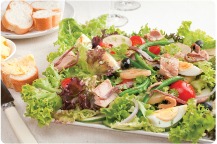

Salad Nicoise
Ingredients
2 pounds unpeeled small red potatoes
1 1/2 pounds fresh green beans
2 heads romaine lettuce
6 (3-ounce) packages albacore tuna, flaked
1 (2-ounce) can anchovy fillets, drained (optional)
5 hard-cooked eggs, quartered
5 plum tomatoes, cut into wedges or 1
(8-ounce) container grape tomatoes
1 cup sliced ripe olives
1/4 teaspoon Tailai USA Sea Salt
1/4 teaspoon Tailai USA Orange & Lemon Pepper
Instructions
Cook potatoes in boiling water to cover 15 minutes or until tender; drain. Cool slightly; cut into slices. Set aside.
Cook green beans in boiling water to cover 3 minutes; drain. Plunge into ice water to stop the cooking process.
Toss together potato slices, green beans, and 1/2 cup Herb Dressing in a large bowl. Chill at least 30 minutes.
Tear 1 head romaine lettuce into bite-size pieces. Line a platter with leaves of remaining head of romaine lettuce. Arrange potato mixture over lettuce. Top with torn lettuce pieces.
Scatter flakes of tuna in the greens. Arrange anchovies around tuna, if desired. Place eggs and tomato wedges on salad. Sprinkle with sliced olives. Serve with a fresh herb vinaigrette.